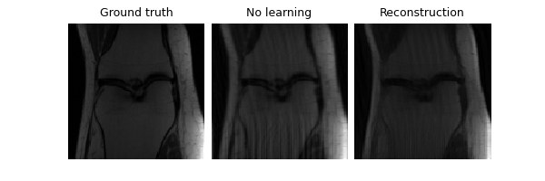

Note
Go to the end to download the full example code.
Self-supervised MRI reconstruction with Artifact2Artifact
We demonstrate the self-supervised Artifact2Artifact loss for solving an undersampled sequential MRI reconstruction problem without ground truth.
The Artifact2Artifact loss was introduced in Liu et al. RARE: Image Reconstruction using Deep Priors Learned without Groundtruth.
In our example, we use it to reconstruct static images, where the k-space measurements is a time-sequence, where each time step (phase) consists of sampled lines such that the whole measurement is a set of non-overlapping lines.
For a description of how Artifact2Artifact constructs the loss, see
deepinv.loss.Artifact2ArtifactLoss.
Note in our implementation, this is a special case of the generic
splitting loss: see deepinv.loss.SplittingLoss for more
details. See deepinv.loss.Phase2PhaseLoss for the related
Phase2Phase.
from pathlib import Path
import torch
from torch.utils.data import DataLoader, Subset
from torchvision import transforms
import deepinv as dinv
from deepinv.utils.demo import load_dataset, demo_mri_model
from deepinv.models.utils import get_weights_url
from deepinv.physics.generator import (
GaussianMaskGenerator,
BernoulliSplittingMaskGenerator,
)
torch.manual_seed(0)
device = dinv.utils.get_freer_gpu() if torch.cuda.is_available() else "cpu"
Load data
We use a subset of single coil knee MRI data from the fastMRI challenge and resize to 128x128. We use a train set of size 5 in this demo for speed to fine-tune the original model. Set to 150 to train the original model from scratch.
batch_size = 1
H = 128
transform = transforms.Compose([transforms.Resize(H)])
train_dataset = load_dataset(
"fastmri_knee_singlecoil", Path("."), transform, train=True
)
test_dataset = load_dataset(
"fastmri_knee_singlecoil", Path("."), transform, train=False
)
train_dataset = Subset(train_dataset, torch.arange(5))
test_dataset = Subset(test_dataset, torch.arange(30))
train_dataloader = DataLoader(train_dataset, batch_size=batch_size, shuffle=True)
test_dataloader = DataLoader(test_dataset, batch_size=batch_size, shuffle=False)
Downloading fastmri_knee_singlecoil.pt
0%| | 0.00/399M [00:00<?, ?iB/s]
1%| | 4.32M/399M [00:00<00:09, 42.4MiB/s]
2%|▏ | 8.73M/399M [00:00<00:08, 43.4MiB/s]
3%|▎ | 13.1M/399M [00:00<00:08, 43.0MiB/s]
4%|▍ | 17.4M/399M [00:00<00:08, 43.2MiB/s]
5%|▌ | 21.8M/399M [00:00<00:08, 42.9MiB/s]
7%|▋ | 26.1M/399M [00:00<00:08, 42.9MiB/s]
8%|▊ | 30.4M/399M [00:00<00:08, 43.0MiB/s]
9%|▊ | 34.7M/399M [00:00<00:08, 42.9MiB/s]
10%|▉ | 39.2M/399M [00:00<00:08, 43.2MiB/s]
11%|█ | 43.5M/399M [00:01<00:08, 43.0MiB/s]
12%|█▏ | 47.8M/399M [00:01<00:08, 42.9MiB/s]
13%|█▎ | 52.1M/399M [00:01<00:08, 42.6MiB/s]
14%|█▍ | 56.4M/399M [00:01<00:08, 42.4MiB/s]
15%|█▌ | 60.7M/399M [00:01<00:07, 42.6MiB/s]
16%|█▋ | 64.9M/399M [00:01<00:08, 40.0MiB/s]
17%|█▋ | 69.3M/399M [00:01<00:08, 41.1MiB/s]
18%|█▊ | 73.7M/399M [00:01<00:07, 41.8MiB/s]
20%|█▉ | 78.0M/399M [00:01<00:07, 41.9MiB/s]
21%|██ | 82.4M/399M [00:01<00:07, 42.4MiB/s]
22%|██▏ | 86.8M/399M [00:02<00:07, 42.7MiB/s]
23%|██▎ | 91.1M/399M [00:02<00:07, 42.4MiB/s]
24%|██▍ | 95.3M/399M [00:02<00:07, 42.3MiB/s]
25%|██▌ | 99.6M/399M [00:02<00:07, 42.5MiB/s]
26%|██▌ | 104M/399M [00:02<00:06, 42.4MiB/s]
27%|██▋ | 108M/399M [00:02<00:06, 42.4MiB/s]
28%|██▊ | 113M/399M [00:02<00:06, 42.5MiB/s]
29%|██▉ | 117M/399M [00:02<00:06, 41.3MiB/s]
30%|███ | 121M/399M [00:02<00:06, 41.2MiB/s]
31%|███▏ | 125M/399M [00:02<00:06, 41.7MiB/s]
33%|███▎ | 130M/399M [00:03<00:06, 42.3MiB/s]
34%|███▎ | 134M/399M [00:03<00:06, 41.7MiB/s]
35%|███▍ | 138M/399M [00:03<00:06, 41.7MiB/s]
36%|███▌ | 142M/399M [00:03<00:06, 41.5MiB/s]
37%|███▋ | 147M/399M [00:03<00:06, 41.9MiB/s]
38%|███▊ | 151M/399M [00:03<00:05, 42.0MiB/s]
39%|███▉ | 155M/399M [00:03<00:05, 42.1MiB/s]
40%|███▉ | 159M/399M [00:03<00:05, 42.3MiB/s]
41%|████ | 164M/399M [00:03<00:05, 42.7MiB/s]
42%|████▏ | 168M/399M [00:03<00:05, 42.2MiB/s]
43%|████▎ | 172M/399M [00:04<00:05, 42.1MiB/s]
44%|████▍ | 177M/399M [00:04<00:05, 42.4MiB/s]
45%|████▌ | 181M/399M [00:04<00:05, 42.6MiB/s]
46%|████▋ | 185M/399M [00:04<00:05, 42.4MiB/s]
48%|████▊ | 190M/399M [00:04<00:04, 42.5MiB/s]
49%|████▊ | 194M/399M [00:04<00:04, 42.4MiB/s]
50%|████▉ | 198M/399M [00:04<00:04, 42.6MiB/s]
51%|█████ | 203M/399M [00:04<00:04, 42.5MiB/s]
52%|█████▏ | 207M/399M [00:04<00:04, 42.3MiB/s]
53%|█████▎ | 211M/399M [00:04<00:04, 42.3MiB/s]
54%|█████▍ | 215M/399M [00:05<00:04, 42.5MiB/s]
55%|█████▌ | 220M/399M [00:05<00:04, 42.6MiB/s]
56%|█████▌ | 224M/399M [00:05<00:04, 42.7MiB/s]
57%|█████▋ | 228M/399M [00:05<00:03, 42.9MiB/s]
58%|█████▊ | 233M/399M [00:05<00:03, 42.8MiB/s]
59%|█████▉ | 237M/399M [00:05<00:03, 42.7MiB/s]
61%|██████ | 242M/399M [00:05<00:03, 43.1MiB/s]
62%|██████▏ | 246M/399M [00:05<00:03, 42.5MiB/s]
63%|██████▎ | 250M/399M [00:05<00:03, 42.4MiB/s]
64%|██████▍ | 254M/399M [00:06<00:03, 42.3MiB/s]
65%|██████▍ | 259M/399M [00:06<00:03, 42.2MiB/s]
66%|██████▌ | 263M/399M [00:06<00:03, 42.2MiB/s]
67%|██████▋ | 267M/399M [00:06<00:03, 42.6MiB/s]
68%|██████▊ | 272M/399M [00:06<00:02, 42.9MiB/s]
69%|██████▉ | 276M/399M [00:06<00:02, 43.1MiB/s]
70%|███████ | 280M/399M [00:06<00:02, 42.4MiB/s]
71%|███████▏ | 285M/399M [00:06<00:02, 42.6MiB/s]
73%|███████▎ | 289M/399M [00:06<00:02, 42.5MiB/s]
74%|███████▎ | 293M/399M [00:06<00:02, 42.5MiB/s]
75%|███████▍ | 298M/399M [00:07<00:02, 42.3MiB/s]
76%|███████▌ | 302M/399M [00:07<00:02, 42.2MiB/s]
77%|███████▋ | 306M/399M [00:07<00:02, 42.1MiB/s]
78%|███████▊ | 310M/399M [00:07<00:02, 42.5MiB/s]
79%|███████▉ | 315M/399M [00:07<00:01, 42.2MiB/s]
80%|████████ | 319M/399M [00:07<00:01, 41.8MiB/s]
81%|████████ | 323M/399M [00:07<00:01, 42.3MiB/s]
82%|████████▏ | 327M/399M [00:07<00:01, 42.1MiB/s]
83%|████████▎ | 332M/399M [00:07<00:01, 42.0MiB/s]
84%|████████▍ | 336M/399M [00:07<00:01, 42.4MiB/s]
85%|████████▌ | 340M/399M [00:08<00:01, 42.4MiB/s]
86%|████████▋ | 345M/399M [00:08<00:01, 42.0MiB/s]
88%|████████▊ | 349M/399M [00:08<00:01, 42.0MiB/s]
89%|████████▊ | 353M/399M [00:08<00:01, 42.3MiB/s]
90%|████████▉ | 357M/399M [00:08<00:00, 42.4MiB/s]
91%|█████████ | 362M/399M [00:08<00:00, 42.9MiB/s]
92%|█████████▏| 366M/399M [00:08<00:00, 43.0MiB/s]
93%|█████████▎| 371M/399M [00:08<00:00, 43.0MiB/s]
94%|█████████▍| 375M/399M [00:08<00:00, 42.9MiB/s]
95%|█████████▌| 379M/399M [00:08<00:00, 42.7MiB/s]
96%|█████████▌| 383M/399M [00:09<00:00, 42.6MiB/s]
97%|█████████▋| 388M/399M [00:09<00:00, 42.2MiB/s]
98%|█████████▊| 392M/399M [00:09<00:00, 42.3MiB/s]
99%|█████████▉| 396M/399M [00:09<00:00, 42.3MiB/s]
100%|██████████| 399M/399M [00:09<00:00, 42.4MiB/s]
/home/runner/work/deepinv/deepinv/deepinv/utils/demo.py:21: FutureWarning: You are using `torch.load` with `weights_only=False` (the current default value), which uses the default pickle module implicitly. It is possible to construct malicious pickle data which will execute arbitrary code during unpickling (See https://github.com/pytorch/pytorch/blob/main/SECURITY.md#untrusted-models for more details). In a future release, the default value for `weights_only` will be flipped to `True`. This limits the functions that could be executed during unpickling. Arbitrary objects will no longer be allowed to be loaded via this mode unless they are explicitly allowlisted by the user via `torch.serialization.add_safe_globals`. We recommend you start setting `weights_only=True` for any use case where you don't have full control of the loaded file. Please open an issue on GitHub for any issues related to this experimental feature.
x = torch.load(str(root_dir) + ".pt")
Define physics
We simulate a sequential k-space sampler, that, over the course of 4
phases (i.e. frames), samples 64 lines (i.e 2x total undersampling from
128) with Gaussian weighting (plus a few extra for the ACS signals in
the centre of the k-space). We use
deepinv.physics.SequentialMRI to do this.
First, we define a static 2x acceleration mask that all measurements use (of shape [B,C,H,W]):
mask_full = GaussianMaskGenerator((2, H, H), acceleration=2, device=device).step(
batch_size=batch_size
)["mask"]
Next, we randomly share the sampled lines across 4 time-phases into a time-varying mask:
# Split only in horizontal direction
masks = [mask_full[..., 0, :]]
splitter = BernoulliSplittingMaskGenerator((2, H), split_ratio=0.5, device=device)
acs = 10
# Split 4 times
for _ in range(2):
new_masks = []
for m in masks:
m1 = splitter.step(batch_size=batch_size, input_mask=m)["mask"]
m2 = m - m1
m1[..., H // 2 - acs // 2 : H // 2 + acs // 2] = 1
m2[..., H // 2 - acs // 2 : H // 2 + acs // 2] = 1
new_masks.extend([m1, m2])
masks = new_masks
# Merge masks into time dimension
mask = torch.stack(masks, 2)
# Convert to vertical lines
mask = torch.stack([mask] * H, -2)
/home/runner/work/deepinv/deepinv/deepinv/physics/generator/inpainting.py:110: UserWarning: Generating pixelwise mask assumes channel in first dimension. For 2D images (i.e. of shape (H,W)) ensure tensor_size is at least 3D (i.e. C,H,W). However, for tensor_size of shape (C,M), this will work as expected.
warn(
Now define physics using this time-varying mask of shape [B,C,T,H,W]:
physics = dinv.physics.SequentialMRI(mask=mask)
Let’s visualise the sequential measurements using a sample image (run this notebook yourself to display the video). We also visualise the frame-by-frame no-learning zero-filled reconstruction.

/home/runner/work/deepinv/deepinv/deepinv/utils/plotting.py:780: UserWarning: IPython can't be found. Install it to use display=True. Skipping...
warn("IPython can't be found. Install it to use display=True. Skipping...")
/opt/hostedtoolcache/Python/3.9.20/x64/lib/python3.9/site-packages/matplotlib/animation.py:872: UserWarning: Animation was deleted without rendering anything. This is most likely not intended. To prevent deletion, assign the Animation to a variable, e.g. `anim`, that exists until you output the Animation using `plt.show()` or `anim.save()`.
warnings.warn(
Also visualise the flattened time-series, recovering the original 2x undersampling mask (note the actual undersampling factor is much lower due to ACS lines):

Total acceleration: tensor(1.3617)
Define model
As a (static) reconstruction network, we use an unrolled network
(half-quadratic splitting) with a trainable denoising prior based on the
DnCNN architecture as an example of a model-based deep learning architecture
from MoDL.
See deepinv.utils.demo.demo_mri_model() for details.
Prep loss
Perform loss on all collected lines by setting dynamic_model to
False. Then adapt model to perform Artifact2Artifact. We set
split_size=1 to mean that each Artifact chunk containes only 1
frame.
loss = dinv.loss.Artifact2ArtifactLoss(
(2, 4, H, H), split_size=1, dynamic_model=False, device=device
)
model = loss.adapt_model(model)
Train model
Original model is trained for 100 epochs. We demonstrate loading the pretrained model then fine-tuning with 1 epoch. Report PSNR and SSIM. To train from scratch, simply comment out the model loading code and increase the number of epochs.
optimizer = torch.optim.Adam(model.parameters(), lr=1e-3, weight_decay=1e-8)
# Load pretrained model
file_name = "demo_artifact2artifact_mri.pth"
url = get_weights_url(model_name="measplit", file_name=file_name)
ckpt = torch.hub.load_state_dict_from_url(
url, map_location=lambda storage, loc: storage, file_name=file_name
)
model.load_state_dict(ckpt["state_dict"])
optimizer.load_state_dict(ckpt["optimizer"])
# Initialize the trainer
trainer = dinv.Trainer(
model,
physics=physics,
epochs=1,
losses=loss,
optimizer=optimizer,
train_dataloader=train_dataloader,
metrics=[dinv.metric.PSNR(), dinv.metric.SSIM()],
online_measurements=True,
device=device,
save_path=None,
verbose=True,
wandb_vis=False,
show_progress_bar=False,
)
model = trainer.train()
Downloading: "https://huggingface.co/deepinv/measplit/resolve/main/demo_artifact2artifact_mri.pth?download=true" to /home/runner/.cache/torch/hub/checkpoints/demo_artifact2artifact_mri.pth
0%| | 0.00/2.16M [00:00<?, ?B/s]
100%|██████████| 2.16M/2.16M [00:00<00:00, 48.8MB/s]
The model has 187019 trainable parameters
/opt/hostedtoolcache/Python/3.9.20/x64/lib/python3.9/site-packages/torchmetrics/utilities/prints.py:70: FutureWarning: Importing `spectral_angle_mapper` from `torchmetrics.functional` was deprecated and will be removed in 2.0. Import `spectral_angle_mapper` from `torchmetrics.image` instead.
_future_warning(
Train epoch 0: TotalLoss=0.005, PSNR=30.569, SSIM=0.824
Test the model
trainer.plot_images = True
trainer.test(test_dataloader)

Eval epoch 0: PSNR=34.707, PSNR no learning=35.317, SSIM=0.887, SSIM no learning=0.793
Test results:
PSNR no learning: 35.317 +- 2.273
PSNR: 34.707 +- 1.726
SSIM no learning: 0.793 +- 0.069
SSIM: 0.887 +- 0.017
{'PSNR no learning': 35.316982142130534, 'PSNR no learning_std': 2.2733045299110897, 'PSNR': 34.706752777099609, 'PSNR_std': 1.726188043675174, 'SSIM no learning': 0.7928400258223216, 'SSIM no learning_std': 0.069419530558013226, 'SSIM': 0.88720295230547586, 'SSIM_std': 0.017403468953484106}
Total running time of the script: (0 minutes 15.816 seconds)